Overview
Questwealth Portfolios (QWP) is a product under Questrade (Investing) that offers its customers managed investing services — ETF portfolios handpicked by financial experts/advisors. The purpose of the QWP product landing page is to get more existing customers and new prospects on the website to convert and open a QWP/managed investing account with us.
In this project to redesign the QWP product page, I’m responsible for researching why our QWP Product page has an astounding 80% bounce rate (and a low conversion rate) and to come up with a design optimization solution, especially when the robo-advice market is bound to see a massive market size growth in the next 10 years.
Duration: Entire last quarter of 2023
Role: UX Research and UX and UI Design; Design Handoff
Results
Reached 40% of yearly conversion goal (account openings) in just 1 quarter
New Account Openings ~+40% in Q1
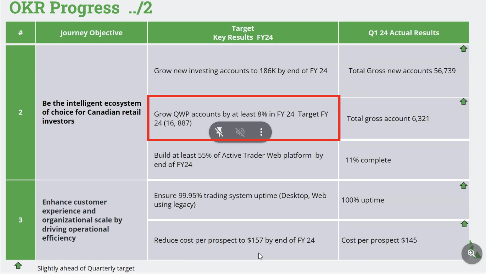
Bounce rate of landing page went from 80% to 30%
Bounce Rate: 80% — May 1 – Oct 31, 2023
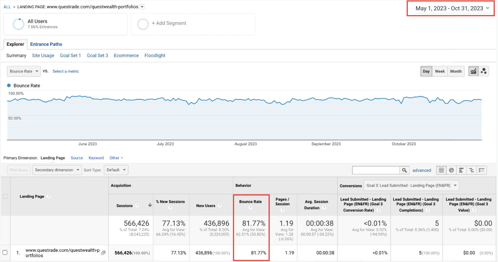
Bounce Rate: ~30% — Nov 1 – Apr 21, 2024
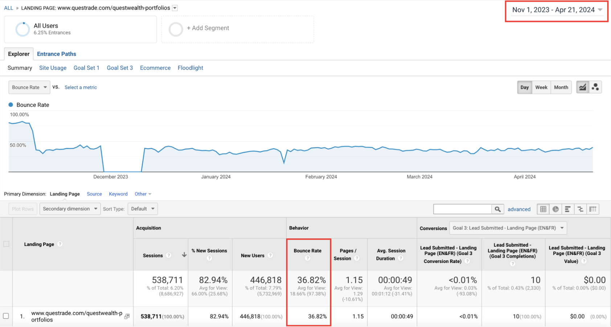
After the new design for the page was pushed live in December, the bounce rate for the QWP landing page saw a drastic decrease — it went from a consistent ~80% for many months (since Jan 2023 and prior) to a bounce rate of ~30% for multiple months after its deployment.
To make for a fair comparison, I set the 2 date ranges to be a period of 6 months long each (i.e. May 1 – Oct 31, 2023 and Nov 1 – Apr 21, 2024) with the sessions being rather similar (around ~500k each during the time period). Though there is a dip in bounce rate during December, it is also important to note that there were also less sessions/users visiting the landing page during the holiday season — but for the months after, we’re seeing a consistent much lower bounce rate compared to before when we had the old landing page.
Process
UX Researcher
Collect insights, analyze insights, design strategy sync with team. Collected insights from:
- Marketing Strategy and Communications deck — target persona; communication objectives & key messaging
- QWP Competitive Analysis — Wealthsimple, BMO SmartFolio, RBC InvestEase, NestWealth, Vanguard Digital Advisor, Betterment
- QWP Baselines (traffic and site analytics insight report) — overall baselines and per-page engagement/conversion metrics
- QWP SEO Research — top keywords and volume
- Google Analytics and Power BI — analyzed insights into hypotheses and design solutions; synced design strategy with product owner and stakeholders
UX/UI Designer
- Low fidelity wireframes — first draft based on design strategy; mapped basic steps in a user-flow / wire-flow
- Design sync with stakeholders — feedback from designers, stakeholders, and product owners
- High fidelity wireframes — refined from feedback; additional versions and viewports where necessary
- Dev handoff — answered questions; provided component specs and behaviours
The Problem
The proposal to redesign the QWP product page stems from the challenges product and business see in the performance analytics of the QWP pages, specifically the QWP product page which is the main homepage.
There is an astounding 82% bounce rate and 87% exit rate for the QWP product page. Of the 1285 OAA (“Open an Account” — CTA) clicks, only 5.72% turn into leads, and eventually account creation (conversion).
Even after the user creates a QWP (i.e. managed investing) account, the number of investment accounts (e.g., RRSP, TFSA, FHSA, etc.) that they hold in their QWP account is lower than industry average (1.29 accounts per QWP client vs. 1.38 within industry).
Opportunity & Goal
These problems present themselves in front of the opportunity of the growing robo-advising market (the AUM/total market value of investments managed will go from $18.6 B in 2022 to $265.8 B in 2032). There’s lots to leverage but the QWP product and its homepage are lagging in page performance (engagement and clicks) and conversion.
The solution at a high level is to increase engagement and clicks (on the OAA CTA) of the QWP product page and increase conversion of QWP accounts as a product overall.
Assumptions
Assumptions why the current problems/challenges exist:
- Canadians don’t know the impact fees have on their investment performance (i.e. high fees lower their returns)
- There is low consumer awareness of QWP, and little understanding of what QWP is
- Consumers want to “try before they buy” — they think switching is difficult, and want to compare results/experience before willing to fully commit: “I’m not gonna move everything there, but I’m definitely willing to check it out and see.”
From the above, success metrics would be a decrease in bounce and exit rates for the QWP product/homepage; increase in OAA/CTA clicks, and account creation.
Target persona signals
- Top motivation to invest is building wealth and retiring comfortably
- Currently investing at the bank with a branch-level advisor who defaults them into mutual funds
- Not aware of other alternatives that fit their knowledge, comfort, or involvement capacity
- High consumer barrier with perceived difficulty of switching
- Paying for “comfort”: “When it comes to investing – I need a professional to do it for me, I just don’t have the time, skills or knowledge to take that on myself. It’s better to invest with an advisor at the bank, even if it costs me a little bit more and the service is not great”
- They don’t realize how those seemingly small fees can add up and have a major negative impact on their long-term wealth and financial success.
Constraints
User data doesn’t exist
One of the biggest constraints in the preface of this project is that user data doesn’t exist to explain the low conversion and engagement rate on the QWP product page. We have the data and analytics to show problems exist, but the “why” is unknown — why users bounce and exit at a high rate, engage (click on CTAs) and convert (open an account) at a low rate. Hence, the “challenges that the user faces” outlined are assumptions made by the marketing and product team. These assumptions hold heavy weight in directing the communication/messaging on the page.
Without real users to talk to, I had to rely on the only resources available — data/analytics showing a conversion and engagement problem exists, and a marketing strategy deck with the marketing and product teams’ assumptions of why the problem(s) exists.
Designing for websites — a more unique problem compared to web apps
This problem is more unique to designing a page on a website than a web or mobile app. A user already using a web or mobile app is already a customer and likely someone we can reach out to for feedback. Website users come and go without us being able to identify who they are and their behavioural patterns — and it’s not likely we’ll gather much insight into why they bounced or don’t click our CTAs. A website also needs marketing messaging and SEO keywords to drive business results — balancing user-centric design while solving real business problems for stakeholders is crucial.
Given these constraints, I had to work beyond the assumptions given and figure out possible reasons myself as the UX researcher and designer. Usability testing that I pushed for was also skipped due to pushing out the newly designed product page before year end. How the new product page fares is highly dependent on new analytics/performance data — and other drivers of engagement include the marketing copy itself and marketing direction constraints the design has to work within.
Research & Insights
After understanding the problem, business, product, and marketing requirements and constraints, I started analyzing the different QWP pages — with the QWP product page/homepage as the primary page to analyze.
- What are users looking for?
- What questions are they trying to answer?
- What are they concerned about?
- What are they hesitant or frustrated about?
Exposure Rate July 1 – Sept 30, 2023 — All users (Desktop & Mobile)
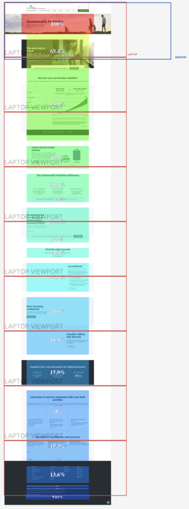
This image shows the exposure rate of different sections of the QWP product page for the laptop and desktop viewport. A lot of the content below the first 2 folds gets viewed/exposed at a much lower rate — and it’s alarming that we don’t have the CTA in the first fold, something crucial to conversions.
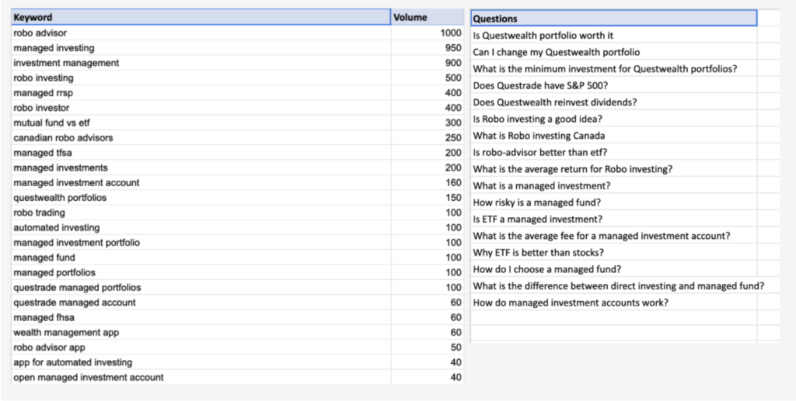
From SEO research, “robo advisor” / “robo investing” ranks much higher in volume than the product name “questwealth portfolios/QWP.” These are the keywords users input into Google before finding our page. If we want more visitors, messaging and copy should cater to keywords people actually use. Frequently asked questions also show users are unfamiliar with managed/robo investing as a concept.
From this data, we can infer that the product page should have “managed/robo investing” as a headline rather than “Questwealth Portfolios.” QWP can still be part of branding in the hero (less prominent), but a more relevant keyword as the main headline helps retain users since they’d find it more relevant. Since there’s a lot of searched questions about what managed/robo investing is, an explanation at the top of the page is necessary.
Overarching thesis: in order for the user to go through the customer journey of Awareness → Consideration → Preference → Conversion, we need to first build confidence, followed by trust, and convenience of converting/switching.
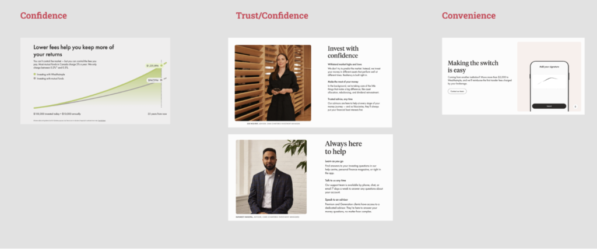
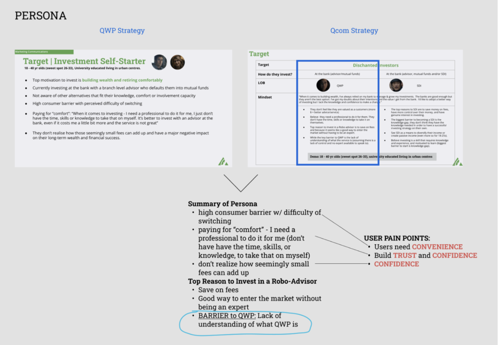
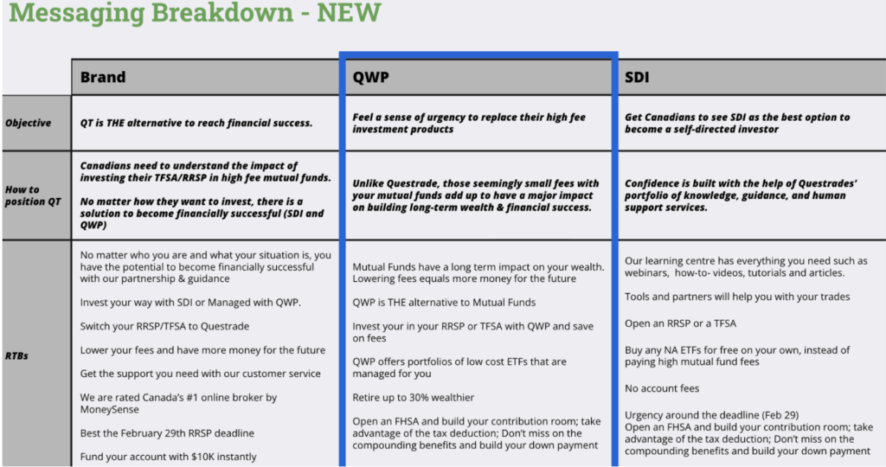
We also took into consideration marketing messaging that needs to be adhered to:
- Low Fees
- Portfolios managed for you
- Alternative to Mutual Funds
- Retire up to 30% Wealthier
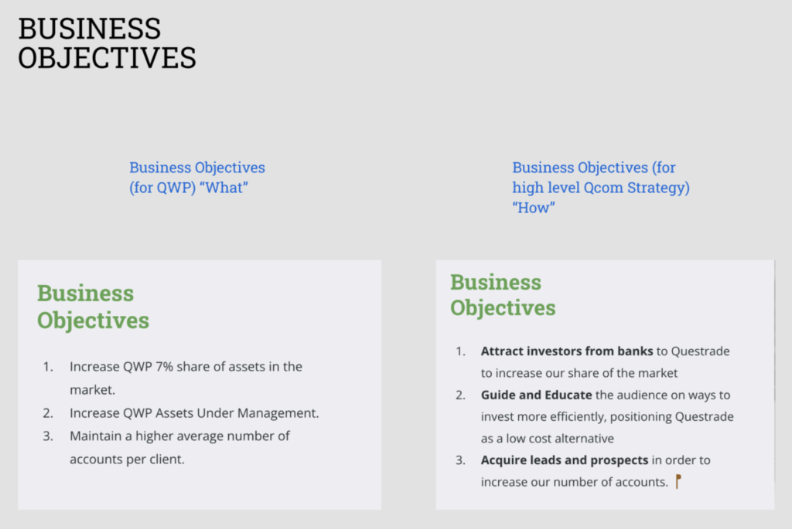
Before proposing design recommendations, we looked at business objectives for the QWP page and for Qcom (Questrade website) as a whole. QWP page objectives are the “what” (OKRs) we want to achieve; high-level Qcom objectives are like “how.” We used Qcom objectives to keep design strategy aligned with business goals.
With the above, we came up with 3 high-level hypotheses for beneficial changes:
- Optimize pages for mobile
- Content is not engaging enough to keep users interested — SEO shows a discrepancy between keywords users search for and keywords in our branding/copy, so users bounce once they land and find the content doesn’t resonate. Create content that’s more engaging and relevant.
- Distractions derail users from converting — the current QWP product page has 14 CTAs driving customers to many different landing pages. This disconnected experience moves users away from our conversion channel.
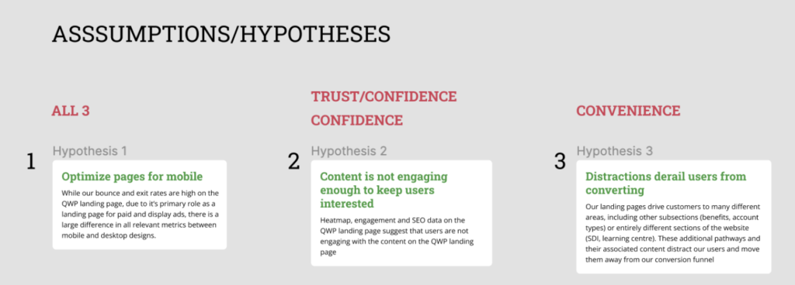
Design Recommendations
Using the overarching thesis of confidence, trust, and convenience — and the 3 hypotheses (optimize for mobile, more engaging content, remove distractions) — we came up with 14 design recommendations. Each is tied to a Law of UX, the overarching thesis, business objectives and pain points (with data), and the customer journey stage it pertains to.
UX laws and journey framing used to structure recommendations:
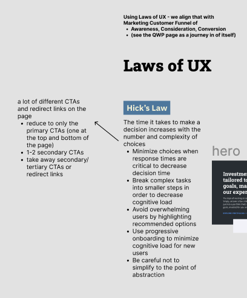
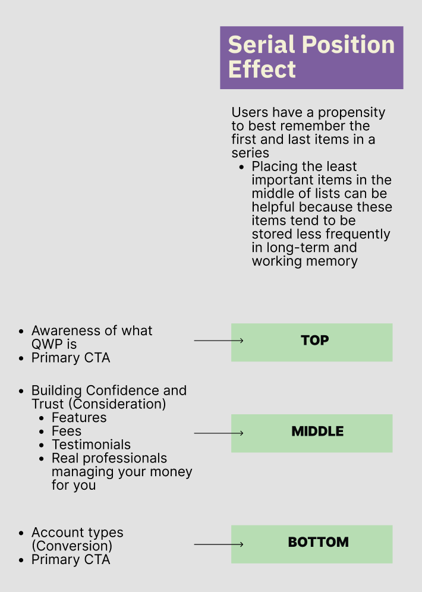
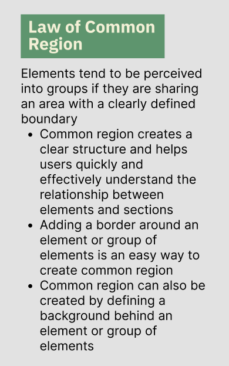
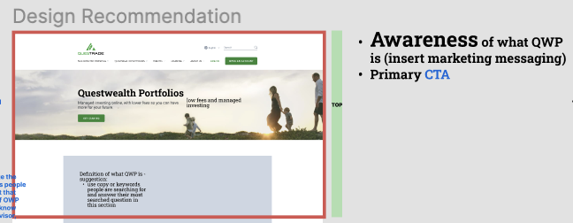
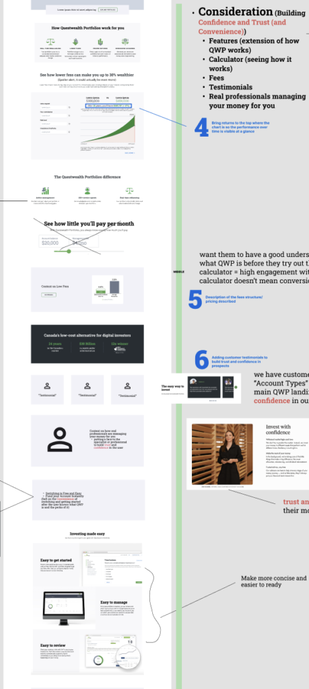
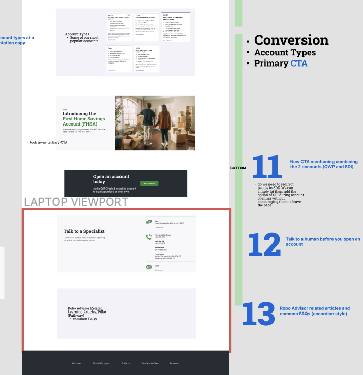
1. Put the Primary CTA above the fold
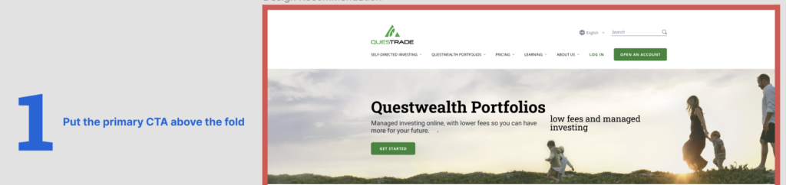
The current CTA appears below the fold (on both desktop and mobile) — having a clear action button visible right when the user lands that directs them to act on a business-driving goal is essential to increasing conversion.
2. Define what QWP is using keywords people search for
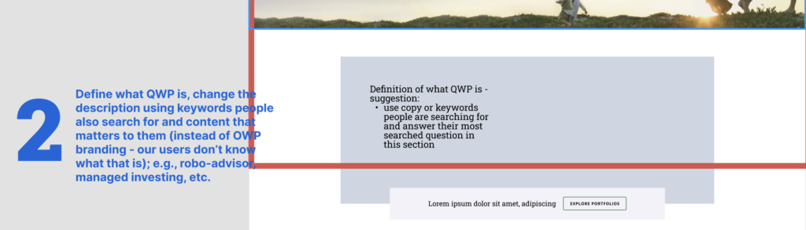
Based on SEO research, people want to know things like: Is robo-investing a good idea? What is robo investing? What is a managed investment? Addressing these at the top of the page assures users they landed somewhere relevant.
3. Explain features on the landing page
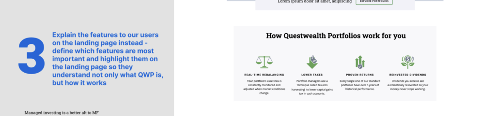
We currently ask users to click to a “Features” page (rarely clicked). Communicating features at a glance on the landing page is more efficient and accessible.
4. Bring returns to the top where the chart is
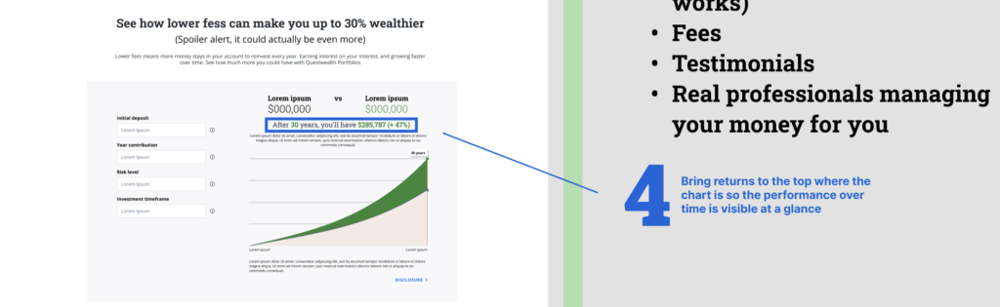
Emphasize and make clear on the calculator what returns look like in a set timeframe so users can “try before they buy.”
5. Describe the fees structure / pricing on-page
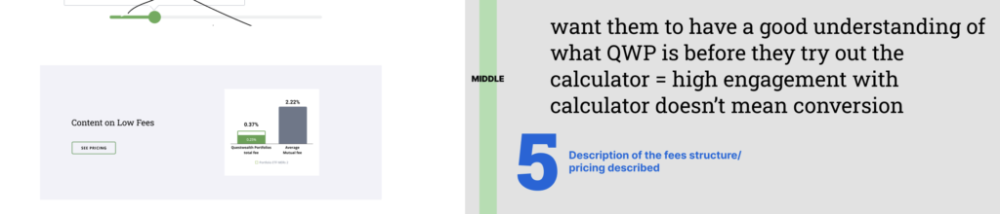
People care about average fees for managed investing. Redirecting to a separate Pricing page (rarely clicked) is worse than explaining pricing clearly on the product page.
6. Add customer testimonials
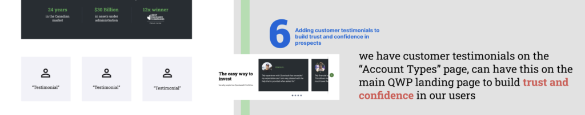
Account Types and related pages have low engagement — customer testimonials that build trust/credibility belong on the QWP product page.
7. Add expert profile
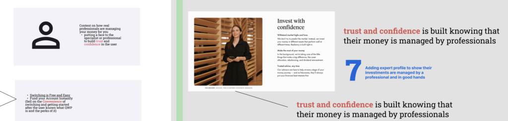
A real professional’s face and credentials on the landing page helps build trust and confidence — crucial for conversion.
8. Emphasize convenience of switching and funding
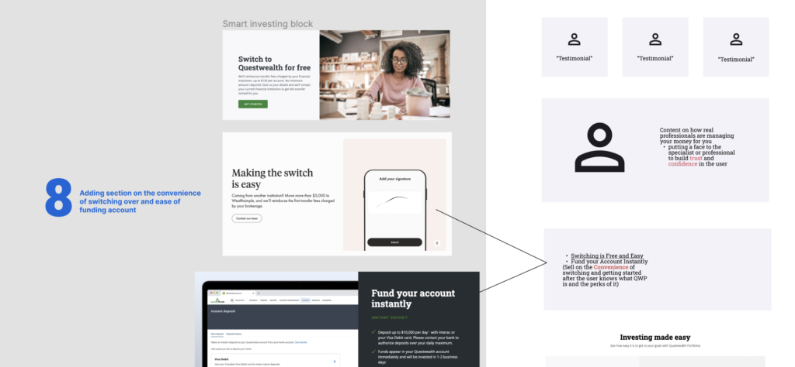
Communicating convenience is the third part of the strategy. Emphasizing ease of switching makes it easier for users to get started.
9. Show how easy it is to get started, manage, and review investments
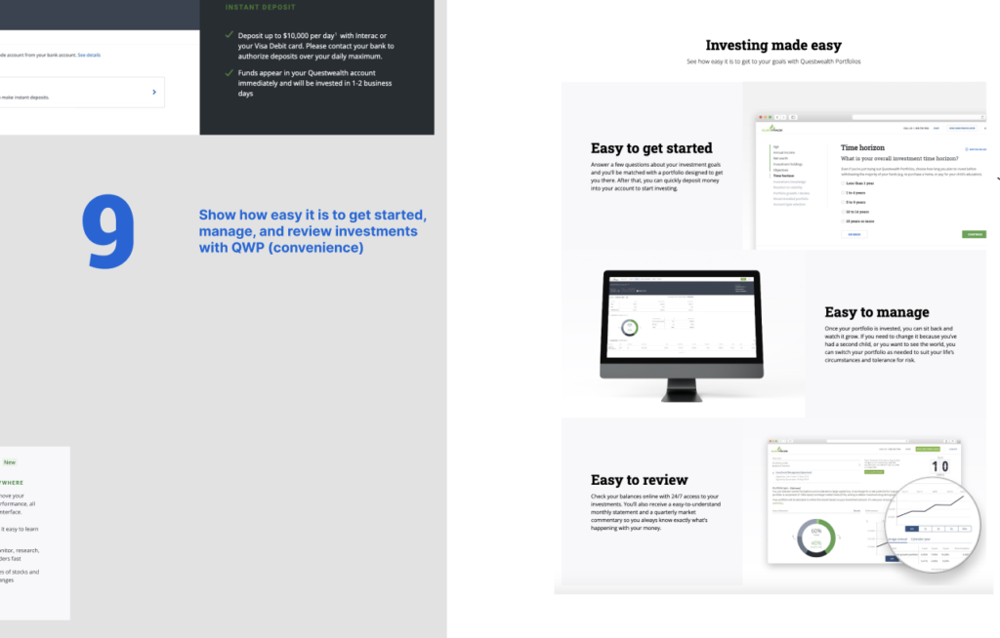
Highlight ease of starting and how easy it is for customers to manage investments on the platform.
10. Account types at a glance — goal-oriented copy
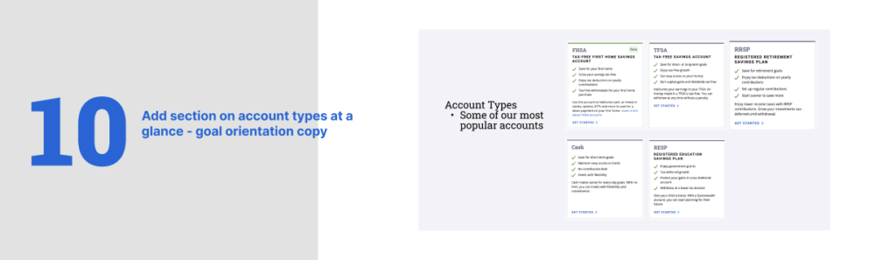
Show different account types and features at a glance so users know what they’re converting to.
11. New CTA mentioning combining QWP and SDI accounts
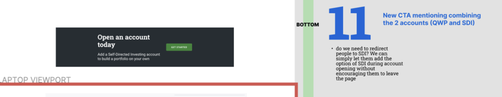
Product/marketing asked to leverage opening both SDI and QWP accounts — included toward the end of the page for flexibility.
12. Talk to a human before you open an account
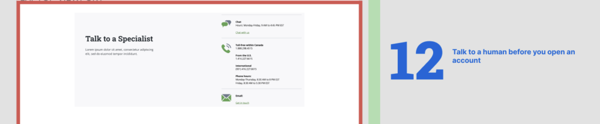
If a user reaches the bottom with questions, offer a real person over the phone before they exit.
13. Robo-advisor related articles and common FAQs
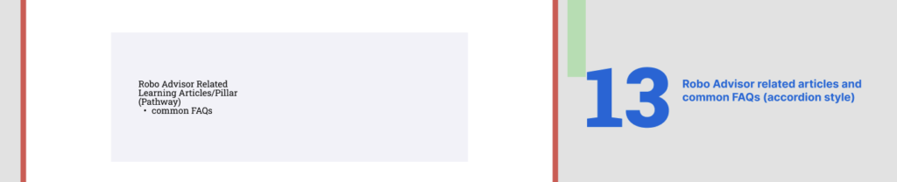
If still unsure, users can visit related articles on account types and managed investing before deciding.
14. Popular portfolios and historical performance
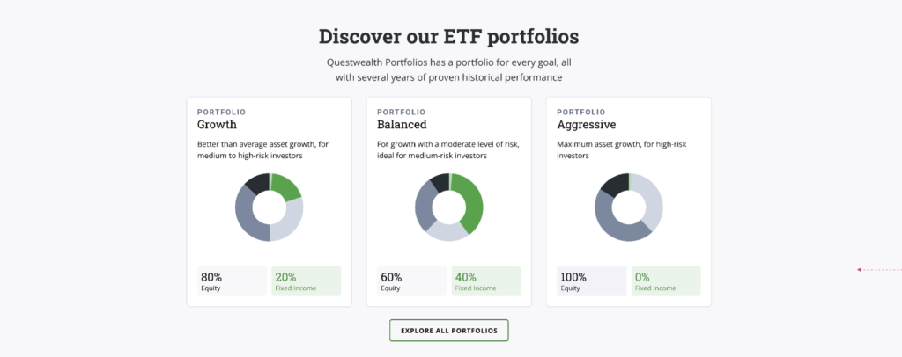
Outline most popular portfolios and historical performance to show people they can safely invest in their future.
Design Changes
Design changes implemented for this cycle:
- Rec #1: Put the primary CTA above the fold and near the end (Serial Position Effect)
- Rec #2: Define what QWP is using keywords people search for (robo-advisor, managed investing, etc.)
- Rec #3: Explain the most important features on the landing page
- Rec #5: Description of the fees structure/pricing
- Rec #10: Account types at a glance — goal-oriented copy
- Rec #14: Popular portfolios and historical performance
UX wireframes — desktop, tablet, mobile
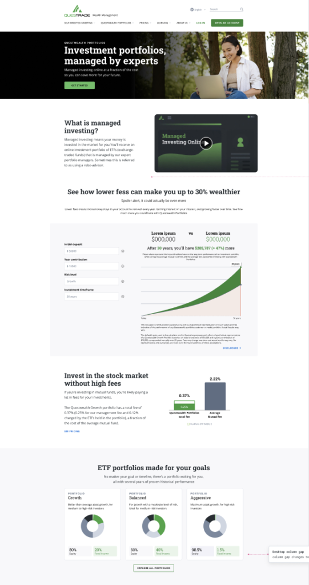
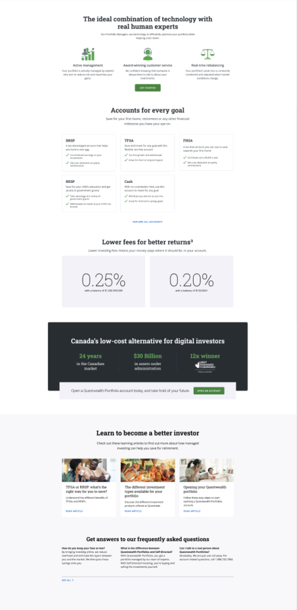
After UX wireframes, UI work starts — component specs (if not in the design system), padding for accessibility, font sizes for visual hierarchy, etc.
1. Describing specs and behaviour of new components to devs
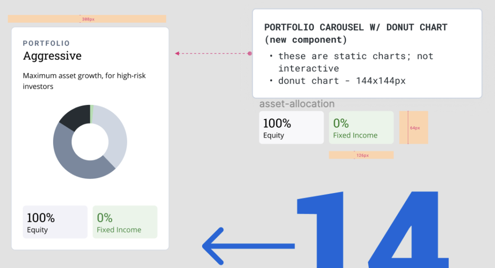
Since the portfolio card is a new component not yet in the design system, including it required clear specs for developers — including donut chart size and static rather than dynamic behaviour.
2. Better accessibility — increased padding
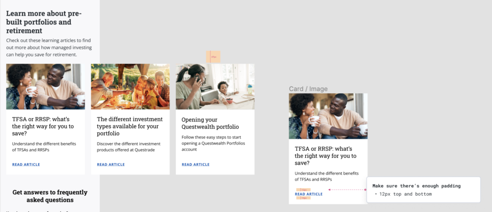
To allow easier interaction (especially on mobile) and better legibility, we increased padding within the learning article card.
Additional specs documentation:
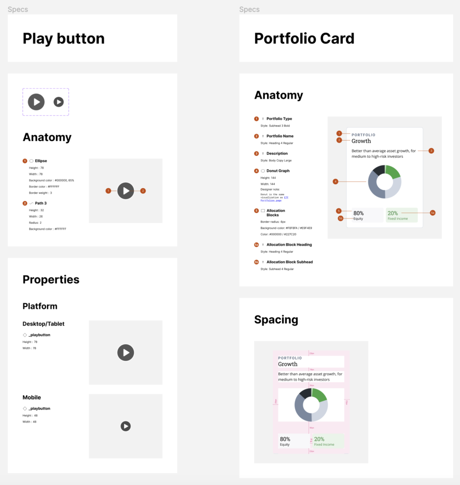
Final Thoughts
We achieved our goal of decreasing bounce rate by nearly 50%. Aside from growing account openings by 40% in the first quarter, the click rate for a new CTA — “Explore Portfolios” — is getting 10.9% in clicks. That’s remarkable since the conversion rate for a great landing page is usually ~9.5% — people are interested in learning more about the product, and the page can generate leads.
This shows a substantial number of people are still at an awareness/consideration stage when they visit — educating themselves about the product. Targeting this group for education and exploration gets the start of the funnel right.
Constraints remain — copy relevancy is decided by the content team (out of scope for designers), and organic/paid traffic levels matter — so the results are remarkable given scope, timeline, and restrictions.
Click rate on CTA button before design change — 1.5%
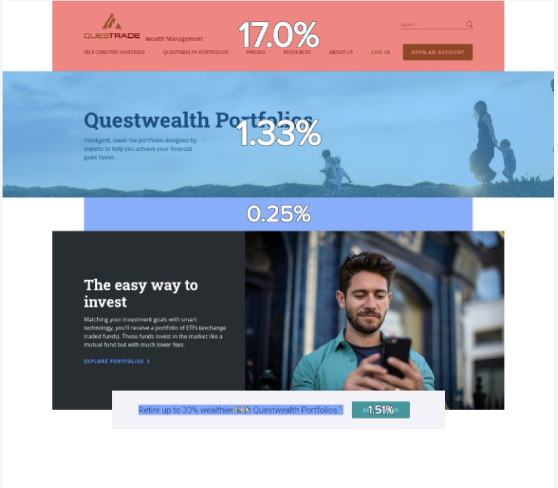
Click rate on CTA button after design change — 1.95% CTA button and 10.9% for “Explore Portfolios” button (highlighted in yellow)
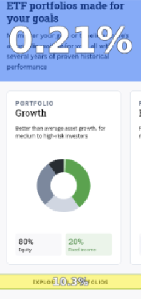